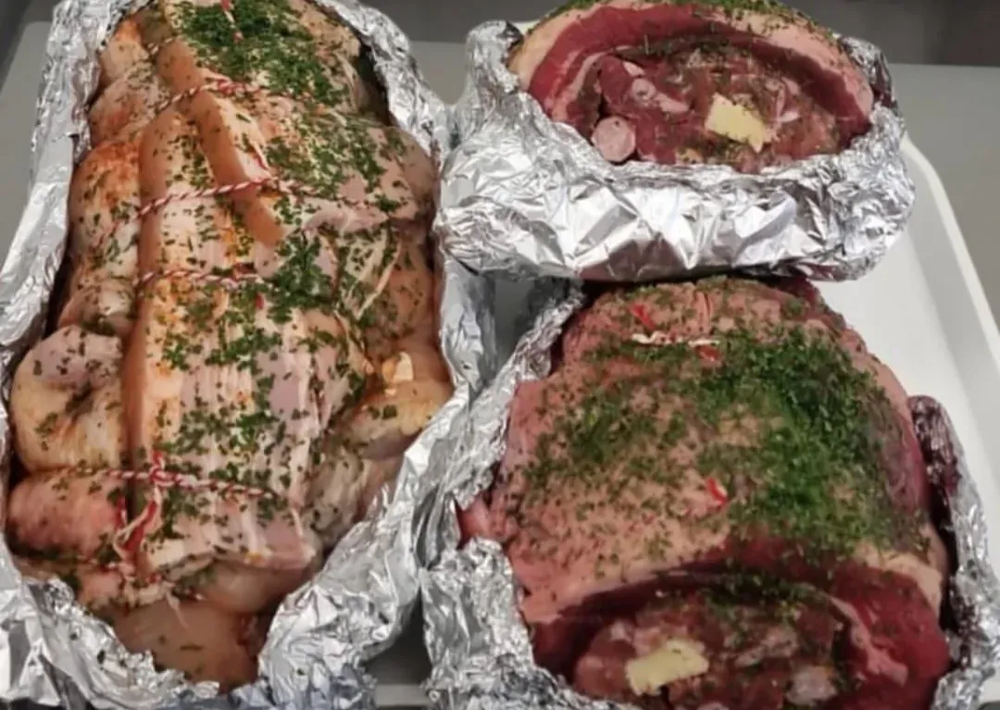

Brazilian cuts, prepared by people who grew up around the churrasqueira. Whole, sliced, rolled or seasoned — just tell us how you'll cook it.Cortes brasileiros preparados por quem cresceu em volta da churrasqueira. Inteiro, fatiado, enrolado ou temperado — é só dizer como vai preparar.
Most high-street butchers don't cut picanha with the fat cap on, or know what a cupim is. We do. Our counter is laid out the Brazilian way, with Irish beef for picanha and maminha and pork cut for pernil, costela and barriga.Açougue comum não corta picanha com a capa de gordura nem sabe o que é cupim. A gente sabe. Nosso balcão é montado do jeito brasileiro, com carne irlandesa para picanha e maminha e porco cortado para pernil, costela e barriga.
Select a cut to see what it is, how Brazilians cook it, and add it to your basket.Escolha um corte para ver o que é, como o brasileiro prepara e adicionar à cesta.
Four simple rules every Brazilian uncle swears by.Quatro regras que todo tio do churrasco jura de pé junto.
Charcoal needs 30–40 minutes to turn to glowing embers. Cook over brasa, never over flame.
O carvão precisa de 30–40 minutos para virar brasa. Asse na brasa, nunca no fogo alto.
Coarse salt — or our parrilla salt — just before grilling. Good meat needs nothing else.
Sal grosso — ou nosso sal de parrilla — logo antes de ir pra grelha. Carne boa não precisa de mais nada.
Linguiça, coração and queijo coalho keep everyone happy while the picanha takes its time.
Linguiça, coração e queijo coalho seguram a turma enquanto a picanha capricha.
Rest the meat a few minutes, then slice thin against the grain. Serve with farofa and vinagrete.
Descanse a carne alguns minutos e fatie fino contra a fibra. Sirva com farofa e vinagrete.
Prices marked /kg are charged on final weight — we confirm the exact total with you on WhatsApp.Preços marcados /kg são cobrados pelo peso final — confirmamos o total exato com você no WhatsApp.
Planning a big churrasco, a family feijoada or a Christmas pernil? Message us with the weight and the cut — we'll prepare it and let you know when it's ready.Vai fazer um churrascão, uma feijoada em família ou um pernil de Natal? Mande o peso e o corte — a gente prepara e avisa quando estiver pronto.
